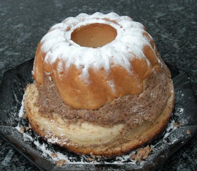

| Zutaten: | |
| Teig: | |
| 500 g | Mehl |
| 20 g | Hefe |
| 100 g | Zucker |
| 3 dl | Milch |
| 150 g | Butter |
| 2 | Eier |
| 1 | Eigelb |
| 1/2 | Zitronenschale |
| 1/4 TL | Salz |
| Füllung: | |
| 1 | Eiweiss |
| 150 g | gemahlene Haselnüsse (od. Baumnüsse od. Mandlen) |
| 100 g | Zucker |
| 1 EL | Zitronensaft |
| 1 dl | Milch |
| Zum Besieben: | |
| Puderzucker | |
Gugelhopfform 22 cm Ø, 2,5 l Inhalt
Teig:
Hefe mit 1 EL Zucker flüssig rühren. Milch erwärmen; Butter darin schmelzen. Eier und das einzelne Eigelb zerquirlen. Zitronenschale abreiben. Mehl, Salz und den restliche Zucker sieben. Dann alles zu einem glatten Teig verarbeiten und diesen klopfen, bis er Blasen zeigt. Teig an einem warmen Ort ums Doppelte aufgehen lassen.
Füllung:
Eiweiss zerquirlen, mit den übrigen Zutaten zur Füllung vermischen. Ofen auf gute Mittelhitze (200°C) vorheizen. Form sorgfältig befetten und mit Paniermehl ausstreuen. Die Hälfte des Teigs in die Form geben. Füllung darüber verteilen. Mit dem restlichen Teig bedecken. Teig mit einer Gabel S-förmig mischen, bis alles leicht vermischt ist.
Gugelhopf 20 Minuten backen. Dann die Temperatur auf Mittelhitze (180°C) reduzieren und den Gugelhopf weitere 45 - 50 Minuten fertig backen. Den ausgekühlten Gugelhopf vor dem Servieren mit Puderzucker besieben. Statt Frischhefe kann 1 Beutel Trockenhefe verwendet werden.
Herbert Eigenmann, Code: GGN
13.8.2008 RE: Das mit dem mischen muss ich wohl noch etwas üben. Es gab auch etwas mehr als in meine Gugelhopfform passte. Schmeckte OK. Die Nussfüllung hatte einen starke Zitronennote die ich gut fand. Der Hefeteig war aber etwas "hefig". Beim Nächsten mal die Backanleitung genauer beachten.
Jacob Berg: "I would buy this cake in a bakery". - 4 Sterne
@LINKBACK_TAG@ @WAKELOCK@